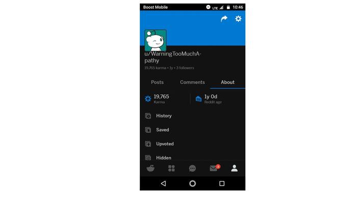
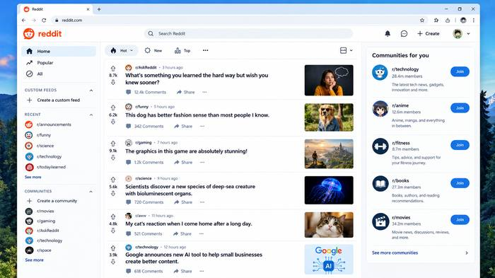
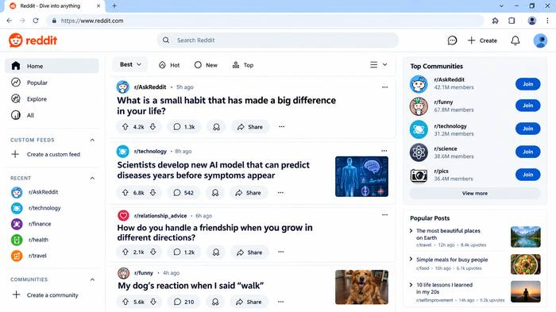
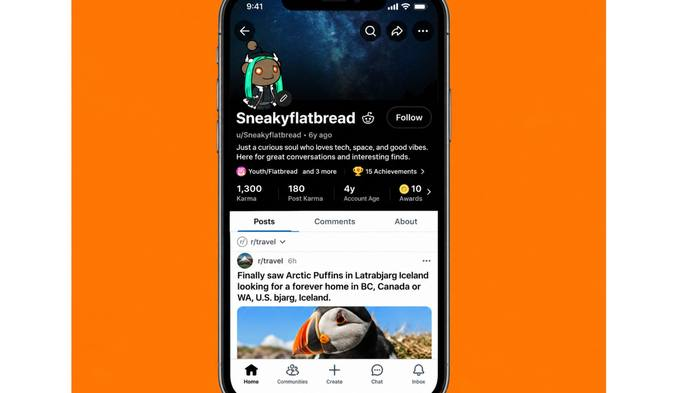
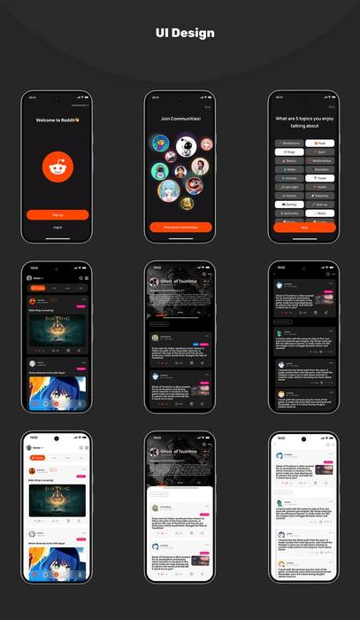

For the past three years I've partnered with founders and small teams to manage the day-to-day (inbox, calendar, content, and community) so they can stay focused on the bigger picture.
I'm Miriam — a virtual assistant, social media manager, and Reddit community specialist with three years of experience helping entrepreneurs and small businesses stay organized, visible, and connected with their audience.
Whether it's managing your inbox and schedule, building a content strategy that converts, or growing an engaged Reddit community from the ground up, I bring the same care and attention to detail to every task — so you can spend less time on admin and more time doing what you do best.
Years of hands-on experience
Clients supported
Communities grown & managed
Client satisfaction rate
Inbox management, calendar scheduling, travel planning, data entry, and day-to-day admin support — handled with precision so nothing falls through the cracks.
Content calendars, captions, scheduling, and community engagement built around a strategy that grows your reach and your bottom line.
Subreddit moderation, karma-safe growth strategy, and authentic engagement for brands looking to build real trust on Reddit.

Reddit account growth & karma tracking

Reddit homepage strategy & content curation

Community engagement & trending content

Reddit profile management, mobile-first

App UI design concepts
Have a project in mind, or just want to see if we're a good fit? Send a message and I'll get back to you within 24 hours.
hello@example.com